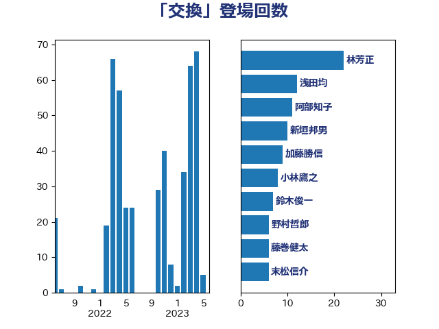

単語「交換」

| 林芳正 | 自由民主党 | 22 回 |
| 浅田均 | 日本維新の会 | 12 回 |
| 阿部知子 | 立憲民主党 | 11 回 |
| 新垣邦男 | 立憲民主党 | 10 回 |
| 加藤勝信 | 自由民主党 | 9 回 |
| 小林鷹之 | 自由民主党 | 8 回 |
| 鈴木俊一 | 自由民主党 | 7 回 |
| 野村哲郎 | 自由民主党 | 6 回 |
| 藤巻健太 | 日本維新の会 | 6 回 |
| 末松信介 | 自由民主党 | 6 回 |
| 岡田直樹 | 自由民主党 | 6 回 |
| 緒方林太郎 | 無所属 | 5 回 |
| 杉本和巳 | 日本維新の会 | 5 回 |
| 舟山康江 | 国民民主党 | 4 回 |
| 紙智子 | 日本共産党 | 4 回 |
| 川田龍平 | 立憲民主党 | 4 回 |
| 岸田文雄 | 自由民主党 | 4 回 |
| 寺田静 | 無所属 | 4 回 |
| 吉田統彦 | 立憲民主党 | 4 回 |
| 伊波洋一 | 無所属 | 4 回 |
| 鈴木敦 | 国民民主党 | 3 回 |
| 森屋隆 | 立憲民主党 | 3 回 |
| 松本剛明 | 自由民主党 | 3 回 |
| 斉藤鉄夫 | 公明党 | 3 回 |
| 後藤茂之 | 自由民主党 | 3 回 |
| 岡田克也 | 立憲民主党 | 3 回 |
| 小西洋之 | 立憲民主党 | 3 回 |
| 大家敏志 | 自由民主党 | 3 回 |
| 吉田宣弘 | 公明党 | 3 回 |
| 野間健 | 立憲民主党 | 2 回 |
| 西村康稔 | 自由民主党 | 2 回 |
| 稲津久 | 公明党 | 2 回 |
| 稲富修二 | 立憲民主党 | 2 回 |
| 秋野公造 | 公明党 | 2 回 |
| 福島みずほ | 社会民主党 | 2 回 |
| 神谷裕 | 立憲民主党 | 2 回 |
| 石原宏高 | 自由民主党 | 2 回 |
| 田村貴昭 | 日本共産党 | 2 回 |
| 片山大介 | 日本維新の会 | 2 回 |
| 浜田靖一 | 自由民主党 | 2 回 |
| 河野義博 | 公明党 | 2 回 |
| 河野太郎 | 自由民主党 | 2 回 |
| 森田俊和 | 立憲民主党 | 2 回 |
| 梅村聡 | 日本維新の会 | 2 回 |
| 松原仁 | 立憲民主党 | 2 回 |
| 山田太郎 | 自由民主党 | 2 回 |
| 山添拓 | 日本共産党 | 2 回 |
| 小田原潔 | 自由民主党 | 2 回 |
| 小倉將信 | 自由民主党 | 2 回 |
| 宮本岳志 | 日本共産党 | 2 回 |
| 奥野総一郎 | 立憲民主党 | 2 回 |
| 和田有一朗 | 日本維新の会 | 2 回 |
| 勝俣孝明 | 自由民主党 | 2 回 |
| 仁木博文 | 無所属 | 2 回 |
| 串田誠一 | 日本維新の会 | 2 回 |
| 中谷一馬 | 立憲民主党 | 2 回 |
| たがや亮 | れいわ新選組 | 2 回 |
| 鰐淵洋子 | 公明党 | 1 回 |
| 音喜多駿 | 日本維新の会 | 1 回 |
| 青柳仁士 | 日本維新の会 | 1 回 |
| 鎌田さゆり | 立憲民主党 | 1 回 |
| 鈴木義弘 | 国民民主党 | 1 回 |
| 金子道仁 | 日本維新の会 | 1 回 |
| 金子恵美 | 立憲民主党 | 1 回 |
| 重徳和彦 | 立憲民主党 | 1 回 |
| 藤井比早之 | 自由民主党 | 1 回 |
| 葉梨康弘 | 自由民主党 | 1 回 |
| 荒井優 | 立憲民主党 | 1 回 |
| 船田元 | 自由民主党 | 1 回 |
| 篠原豪 | 立憲民主党 | 1 回 |
| 篠原孝 | 立憲民主党 | 1 回 |
| 笹川博義 | 自由民主党 | 1 回 |
| 笠井亮 | 日本共産党 | 1 回 |
| 竹内真二 | 公明党 | 1 回 |
| 神谷政幸 | 自由民主党 | 1 回 |
| 石垣のりこ | 立憲民主党 | 1 回 |
| 石原正敬 | 自由民主党 | 1 回 |
| 石井苗子 | 日本維新の会 | 1 回 |
| 石井章 | 日本維新の会 | 1 回 |
| 石井正弘 | 自由民主党 | 1 回 |
| 石井拓 | 自由民主党 | 1 回 |
| 田村智子 | 日本共産党 | 1 回 |
| 田村憲久 | 自由民主党 | 1 回 |
| 田嶋要 | 立憲民主党 | 1 回 |
| 渡辺周 | 立憲民主党 | 1 回 |
| 清水貴之 | 日本維新の会 | 1 回 |
| 浮島智子 | 公明党 | 1 回 |
| 浜口誠 | 国民民主党 | 1 回 |
| 浅野哲 | 国民民主党 | 1 回 |
| 泉健太 | 立憲民主党 | 1 回 |
| 永岡桂子 | 自由民主党 | 1 回 |
| 橘慶一郎 | 自由民主党 | 1 回 |
| 榛葉賀津也 | 国民民主党 | 1 回 |
| 本庄知史 | 立憲民主党 | 1 回 |
| 有村治子 | 自由民主党 | 1 回 |
| 徳永久志 | 立憲民主党 | 1 回 |
| 平沼正二郎 | 自由民主党 | 1 回 |
| 平林晃 | 公明党 | 1 回 |
| 平木大作 | 公明党 | 1 回 |
| 岬麻紀 | 日本維新の会 | 1 回 |
| 岩渕友 | 日本共産党 | 1 回 |
| 岡本三成 | 公明党 | 1 回 |
| 山田宏 | 自由民主党 | 1 回 |
| 山本香苗 | 公明党 | 1 回 |
| 山本左近 | 自由民主党 | 1 回 |
| 山本博司 | 公明党 | 1 回 |
| 山下雄平 | 自由民主党 | 1 回 |
| 小池晃 | 日本共産党 | 1 回 |
| 宮崎雅夫 | 自由民主党 | 1 回 |
| 宮口治子 | 立憲民主党 | 1 回 |
| 太栄志 | 立憲民主党 | 1 回 |
| 大野敬太郎 | 自由民主党 | 1 回 |
| 大口善徳 | 公明党 | 1 回 |
| 大串正樹 | 自由民主党 | 1 回 |
| 大串博志 | 立憲民主党 | 1 回 |
| 塩川鉄也 | 日本共産党 | 1 回 |
| 国光あやの | 自由民主党 | 1 回 |
| 和田政宗 | 自由民主党 | 1 回 |
| 吉良よし子 | 日本共産党 | 1 回 |
| 古賀之士 | 立憲民主党 | 1 回 |
| 古川禎久 | 自由民主党 | 1 回 |
| 前原誠司 | 国民民主党 | 1 回 |
| 住吉寛紀 | 日本維新の会 | 1 回 |
| 伴野豊 | 立憲民主党 | 1 回 |
| 伊藤孝江 | 公明党 | 1 回 |
| 下野六太 | 公明党 | 1 回 |
| 上野通子 | 自由民主党 | 1 回 |
| 三上えり | 立憲民主党 | 1 回 |